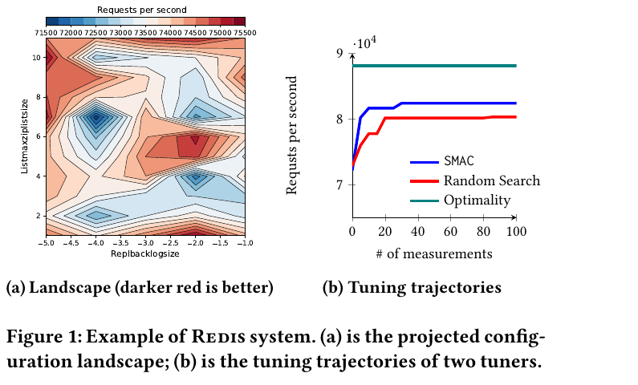

A glossary of tiny lectures
Every entry: 30 seconds to five minutes
By Tim Menzies, published 2026-08-22, updated 2026-08-22
Summary: Terms from this subject, each written as a tiny lecture: a hook, the idea, the math if any, then the code. General theory comes first (Principles), then the weekly terms in the order the course meets them, each week opening with its new acronyms. Code samples are verbatim from ezr.lua, ezr-lib.lua and 101.py.
Principles
General theory, before any specifics. New acronyms: SSOT.
-
Mechanism-policy: Separate the what (policy: small, declarative, easy to change) from the how (mechanism: code that obeys any policy). Then one mechanism serves a thousand policies. Everywhere in this course:
Change the policy line, never the mechanism: a new dataset is a new header row, not new code.policy (a little data) mechanism (code) the doc string options text in 101.py the regx that parses it row 1 of a csv (Lbs-, Acc+ ...) the csv reader, Cols, heaven, disty keys of the eg demo table the go() dispatcher the settings table the every function reading it -
SSOT (single source of truth): Say each fact once; derive everything else. E.g. define the options ONCE, in a help string; parse settings out of that string; then code and documentation can never drift apart:
def settings(doc):
pat = r"--(\w+)\s+[^=\n]*=\s*(\S+)"
return o(**{k: thing(v) for k,v in re.findall(pat, doc)})
the = settings(__doc__)
Other SSOTs here: the README schedule (all dates), row 1 of a csv (all column roles). SSOT is mechanism-policy's best friend: the single source is the policy. - Protocol (duck typing): A set of method names that many types agree to answer, so callers need never ask which type they hold ("if it quacks like a duck..."). Duck typing with a contract. The columnProtocol (week 1) is this course's main one; dist alone is another (any object answering dist can sit in a cluster).
-
Pareto frontier: "Give me the fruitful error any time, full of seeds, bursting with its own corrections. You can keep your sterile truth for yourself." — Vilfredo Pareto.
With many goals there is rarely one best row — lighter cars brake worse. Row a dominates b if a is at least as good on every goal and better on one. The frontier (the o's) is whatever nothing dominates:y2 (less is better)
|
| . . .
| . . . = dominated
| o . .
| . .
| o .
| o . .
| o .
| o o .
| o o o
+---------------------------------------- y1 (less is better)
Report the frontier and let the customer pick their trade-off. -
Pareto evolve: The classic way to find frontiers: evolutionary search. Keep a population; rank rows by domination (frontier = rank 1, peel it off, next frontier = rank 2, ...); prefer low ranks, break ties by staying spread out; breed the survivors; repeat. Three generations, each frontier pushing closer to heaven at the origin:
y2
| 1 1
| 2 1 1 = generation 1's frontier
| 3 2 2 = generation 2, bred from 1
| 3 2 1 3 = generation 3, bred from 2
| 3 2
| 3 3 2 1
| 3 3 2
+------------------------------ y1
each generation marches toward (0,0)
NSGA-II and SPEA2 (see the tool talks) are this loop with different tie-breakers. -
Pareto eval (HV, Spread, GD, IGD): How good is a found frontier? Four usual scores:
HV and Spread read off one picture — the colon region is the hypervolume; the gaps between neighboring o's, scored for evenness, are the Spread:metric asks want HV hypervolume dominated (area behind the frontier, up to a reference point) big Spread how evenly your points cover the frontier small GD mean gap from YOUR points to the true frontier (are you close?) small IGD mean gap from the TRUE frontier's points to yours (did you cover it all?) small y2
| o::::::::::::R R = reference point
| o:::::::::: : = hypervolume HV (bigger = better)
| <--> o::::::::
| o::::: <--> = gaps between neighbors;
| <-----> o::: Spread scores their evenness
| o::
+------------------- y1
GD and IGD are the same arrow, pointed opposite ways:x = TRUE frontier o = your points
y2
| x GD: each o walks to its nearest x
| x <--- o (how close are YOUR points?)
| x
| o ---> x IGD: each x walks to its nearest o
| x x <--- o (how much truth did you COVER?
| one clump of o's scores well on
+------------------- y1 GD but terribly on IGD)
Note the trap: HV, GD and IGD need the very thing search is looking for (a reference point or the true frontier), so they are research-report scores, not steering signals.
In software engineering the fix is the reference optimum: we never know the true best (nobody has godlike knowledge of, say, every compiler configuration), so "optimal" means best-seen-so-far. For evaluation, pool the frontiers found by every algorithm in the study into one combined reference front, and score each algorithm by its gap (GD/IGD) to that. It is not truth — it is the best anybody found — and it is the only frontier you will ever actually have. -
Pareto zoom effect: Across 100+ SE optimization tasks, Pareto-optimal solutions are RARE (about 0.6% of configurations) and CLUMPED — a tiny island, tight in decision space (85% of datasets) and huddled near the ideal corner of objective space (88% of datasets). Real example, the Redis configuration landscape (from the PromiseTune paper): the dark-red good region is a small fraction of a rugged space, and tuners that wander it (SMAC, random search) plateau far below the optimum:

So frontier-chasing evolvers and global Bayesian methods spend most of a small labelling budget wandering the huge ungood region; a greedy regional search that zooms toward the island wins or ties in 84-89% of cases, running 2-3 orders of magnitude faster. The opposite of frontier reasoning is an aggregation function — collapse all goals to one number and chase that. disty (week 2) is this course's aggregation function: zoom, don't wander.Ganguly & Menzies: Zoom, don't wander: Why regional search outperforms Pareto reasoning and global optimization in budget-constrained SBSE. Kishan Kumar Ganguly, Tim Menzies. arXiv:2605.09658, 2026.Chen & Chen: PromiseTune: Unveiling causally promising and explainable configuration tuning. Pengzhou Chen, Tao Chen. ICSE 2026. arXiv:2507.05995.
Week 0: the port, warm-up
New acronyms: TDD, RNG, regx, pdf, cdf.
-
TDD (test-driven development): Red, green, refactor: write a failing test (red), write just enough code to pass (green), then clean up with the tests as a safety net (refactor). This code's dialect: every demo reseeds, prints, then asserts — no crash means pass — and the harness never dies mid-suite. run traps a failing demo and prints its stack dump, so --all can count failures and keep going:
function run(funs,w, ok,msg)
srand(the.seed)
if funs[w] then
ok, msg = xpcall(funs[w], debug.traceback)
if not ok then print(msg) end
return ok end end
The eg table is the whole test framework: demos are just entries, so adding a test is one assignment, no registration ceremony:eg = {} -- the demo table
eg["--col"] = function( n) -- green: watch, then lock in
n = adds{1,2,3,4,5}
print(show{mu=n:mid(), sd=n:div()})
assert(n:mid() == 3) end
eg["--ent"] = function( s)
s = adds({"a","a","b"}, Sym())
assert(abs(s:div() - 0.918) < 0.01) end
eg["--broke"] = function() -- red: prints a stack dump;
assert(2 + 2 == 5) end -- --all counts it, moves on
But beware: test suites are code, with their own maintenance bill — suites of 30 to 50 percent of total code size are not uncommon. So be choosy. A test with zero assertions tests nothing: keep the assert. Mere line coverage can mislead — touching a line is not checking its meaning; prefer a few detailed checks on the code's semantics over many shallow ones. And keep long-running tests out of the suite: slow suites do not get run, and an unrun suite protects nothing. -
Python slices: x[lo:hi] is items lo to hi-1; blanks mean "from the start" or "to the end"; negatives count from the end:
x = [a, b, c, d, e]
0 1 2 3 4 <- index
-5 -4 -3 -2 -1 <- negative index
x[:2] = [a, b] x[2:] = [c, d, e]
x[-2:] = [d, e] x[1:3] = [b, c]
x[:] = a copy of x
In 101.py: s[:1]=="-" (first char), s[1:] (the rest), a[2:] (strip a leading "--"). -
Python f-strings: f"..." runs the braced parts as code; after a colon comes a format spec, which may itself be computed:
That second row is why --round=4 changes every number 101.py prints: one policy value, one printing mechanism.write get f"{x:.0f}" x, zero decimals f"{x:.{the.round}f}" x, the.round decimals f":{k} {say(v)}" any expression allowed - Python doc strings: A string as the first statement of a file (or def) is stored, not executed: __doc__. 101.py's doc string is its usage message (-h just prints it) AND its settings table — settings(__doc__) regx-scrapes the defaults out of the help text. One string: help, defaults, documentation. That is SSOT and mechanism-policy in thirteen lines of Python.
-
Python environ: os.environ is a dict of the shell's variables. Lets one default live outside the code, per machine:
MOOT = (os.environ.get("MOOT") or
os.path.expanduser("~/gits/moot"))
Set MOOT in your shell and 101.py finds your data; set nothing and a sane default fires. -
Python argv: sys.argv is the command line, split on spaces: argv[0] the script name, the rest yours. 101.py walks it twice — first pass updates settings from --key=val, second runs any named tests:
for a in sys.argv[1:]:
if a[:2]=="--" and "=" in a:
k,v = a[2:].split("=",1)
if k in vars(the): setattr(the, k, thing(v))
for a in sys.argv[1:]:
if (n := "test_"+a) in funs:
random.seed(the.seed); funs[n]()
Note that last line; see RNG, next. -
RNG (random number generator): Computers do not roll dice. An RNG is a deterministic formula that looks random; from the same seed, the same stream, forever. This course uses the Park-Miller minimal standard (one multiply, one modulo):
Seed = (16807 * Seed) % 2147483647
The point of need: RESET the seed before every run. Then every experiment replays exactly — same seed, same "random" numbers, same result — on your machine, your grader's, and in Lua or Python alike (ports are graded by diff-ing the two streams). 101.py does this before every test:random.seed(the.seed); funs[n]() # reset, then run
Forget the reset and your "bug" changes every run. Reset, and science becomes repeatable. -
Python reflection (self-registering tests): How does a new demo join the command line? In Lua, by hand: eg["--tree"] = function() ... end. Python can do the registration itself, since globals() is just a dict of every top-level name:
def test_tree():
"recursive contrast splits; leaves show row counts"
show(tree(Tbl(csv(the.file))))
eg = {"-" + k[5:]: f for k, f in globals().items()
if k.startswith("test_")}
def run(f): # reseed, call f, catch crashes
seed(the.seed)
try: f()
except Exception: traceback.print_exc()
if __name__ == "__main__":
for j, s in enumerate(sys.argv):
if f := eg.get("-" + s.lstrip("-")): run(f)
elif (k := s.lstrip("-")) in the:
the[k] = atom(sys.argv[j + 1])
Four tricks, top to bottom. Self-registration: the dict comprehension scans globals(), keeps every name starting test_, strips the prefix (k[5:]) and maps the flag -tree to the function itself. Write def test_x and -x exists; delete it and the flag is gone. Mechanism-policy again: the policy is a naming convention, the mechanism two lines. And the docstring rides along as the flag's help text (f.__doc__). run() = reseed, then shield: reseed first, so every demo replays exactly (see RNG, above). Then try/except: a crashing demo prints its full stack (traceback) and the loop moves on, so one failure cannot hide the others. The main guard: dispatch fires only when this file is the script the user ran; importing it defines everything and runs nothing (Lua's go(eg) plays the same role). One pass over argv: the walrus := names a value inside the test. lstrip("-") accepts -tree or --tree. A flag naming a test runs it; a flag naming a settings key takes the NEXT argument (sys.argv[j + 1]), coerces it with atom, and updates the. Order matters: python x.py -seed 42 -tree resets the seed before the test fires. -
regx (regular expressions): Little languages for matching text. Just enough for 101.py and the Lua at its side (Lua patterns use "%" where Python uses "\", and "-" where Python uses "*?"):
The two worked examples, one per language — 101.py scraping its --key ... = default pairs from its doc string, ezr picking a column's kind off its first letter:means python lua word char (letter/digit) \w %w whitespace / non-space \s and \S %s and %S letter / lowercase [a-zA-Z] %a and %l any chars, lazy .*? .- start / end of string ^ and $ ^ and $ one char from a set [^=\n] [+-] capture a group ( ) ( ) all matches re.findall s:gmatch find / replace re.search, re.sub s:find, s:gsub a literal dot \. %. pat = r"--(\w+)\s+[^=\n]*=\s*(\S+)" # 101.py
return (name:find"^%l" and Sym or Num)(name,at) -- ezr.lua -
Gaussian (mean, second moment): The bell curve:
* *
* *
* *
* *
* *
* *
* * * *
--------+-----------+-----------+----
mu-sd mu mu+sd
(68% of the data falls
within mu +/- 1*sd)
Summarized by two moments: the first moment μ (the mean, mu) and, from the second moment, the spread (m2 = sum of squared deviations, so sd = √(m2/(n-1))). Two tricks make these course-critical: both update incrementally, one value at a time (welford, week 1); and two summaries subtract without resampling. From ezr-eg1's --without demo: pour {10,20,30} into a summary of {1,2,3,4,5}, subtract a summary of {10,20,30}, and mu and sd of {1..5} come back exactly. Learn, unlearn, in O(1) — no stored data (see stream, week 1). -
pdf (probability density function): The bell curve, or any curve like it: the relative likelihood of each value. For a normal with mean μ and deviation σ, the likelihood of x falls off as the square of its distance from the mean:
- f(x) = 1/(σ√(2π)) · e-(x-μ)²/(2σ²)
-
cdf (cumulative distribution function): The fraction of a population at or below a value: the area under the pdf up to x. Monotone, 0..1 — which makes it a natural normalizer: norm maps any cell to "what fraction of this column sits below you?". The normal cdf has no closed form, so ezr uses a logistic approximation (good to about ±1%), with the z-score clamped to ±3:
- cdf(z) ≈ 1 / (1 + e-1.702z)
function NUM.norm(i,v, z)
if v == "?" then return v end
z = (v - i.mu) / (i:div() + TINY)
return 1 / (1 + exp(-1.702 * max(-3, min(3, z)))) end
A bonus, for later: discretization rides on this for free. To turn any number into a small bin id, take floor(the.bins · num:norm(23)) — since norm is the cdf, equal-width slices of 0..1 give (roughly) equal-frequency bins of the data.
Week 1: columns, streaming, forgetting
New acronyms: noir.
-
noir: Nominal, Ordinal, Interval, Ratio (Stevens 1946): the four scales of measurement. This code collapses them to two: symbols you can only count (nominal) and numbers you can subtract (interval and up). One header letter decides which:
-- Column kind from the first letter: lowercase makes a SYM,
-- uppercase a NUM.
function Col(name,at)
return (name:find"^%l" and Sym or Num)(name,at) endStevens: On the theory of scales of measurement. S.S. Stevens. Science 103, 2684 (1946), 677-680. -
Num: The summary of a numeric column: count n, mean mu, and m2 (the sum of squared deviations from the mean, from which the standard deviation falls out). Nothing else is stored — not the data, just three numbers. A trailing "-" in the name means "goal: minimize".
function Num(name,at)
name = name or ""
return new(NUM, {at=at or 1, name=name, n=0, mu=0, m2=0,
heaven = name:find"-$" and 0 or 1}) end
That last line, in Python, uses the True/False-is-1/0 trick (bools ARE ints, so arithmetic on a test needs no if):heaven = 1 - (name[-1] == "-") # True==1, False==0
-
Sym: The summary of a symbolic column: count n and a table of counts has. Again, no data kept — just the histogram.
function Sym(name,at)
return new(SYM, {at=at or 1, name=name or "", n=0, has={}}) end -
columnProtocol: Num and Sym answer the same eight questions — one polymorphic protocol, two implementations. Everything downstream (tables, distance, trees, cuts) talks to the protocol, never to the type:
Two samples, both sides of add. Note the shared conventions: "?" (missing) is ignored on the way in, and inc=-1 runs the summary backwards (see stream):question Num answers Sym answers add welford update of mu, m2 bump a count in has sub welford, run backwards drop a count mid mean mode div standard deviation entropy norm cdf position, 0..1 identity dist gap of normed values 0 if same else 1 holds x ≤ v x == v reset zero mu, m2 empty has function NUM.add(i,v,inc, d)
if v == "?" then return v end
inc = inc or 1
i.n = i.n + inc
d = v - i.mu
i.mu = i.mu + inc * d / i.n
i.m2 = i.m2 + inc * d * (v - i.mu); return v end
function SYM.add(i,v,inc)
if v == "?" then return v end
inc = inc or 1
i.n = i.n + inc
i.has[v] = inc + (i.has[v] or 0)
if i.has[v] <= 0 then i.has[v] = nil end
return v end -
welford: Welford's 1962 one-pass update: mean and variance from a stream, no stored data, no catastrophic cancellation. After each value v:
- n' = n+1
- d = v - μ
- μ' = μ + d/n'
- m2' = m2 + d(v - μ')
Welford: Note on a method for calculating corrected sums of squares and products. B.P. Welford. Technometrics 4, 3 (1962), 419-420. -
stream: A summary you can update — and un-update — one datum at a time, in constant memory. The inc argument (+1 or -1) means adding is O(1) and so is deleting, so any add-and-forget sweep over n items runs in linear time. Remember that: it matters later. Trees will score EVERY possible split of a sorted column in one linear pass — adding each row to the summary on one side of the cut while forgetting it from the other — where naive rebuilding would cost O(n²). It is also why (a+b)-b == a is a testable law (--without, --sub in ezr-eg1).
function NUM.reset(i) i.n, i.mu, i.m2 = 0, 0, 0 end
function SYM.reset(i) i.n, i.has = 0, {} end -
mid (mode, mean): The most frequent symbol: a Sym's answer to mid ("what is typical here?"). The mean is the same question asked of numbers — both are one value standing in for the whole column. That is why mid is one protocol slot, not two functions with different names:
function SYM.mid(i, hi,out)
hi = -1
for k, n in pairs(i.has) do
if n > hi then hi, out = n, k end end
return out end
function NUM.mid(i) return i.mu end -
diversity (entropy, standard deviation): Shannon 1948: the spread of a symbol column, in bits — the mean surprise of drawing from counts pk = nk/n:
- e = -∑ pk log2 pk
function SYM.div(i)
return sum(i.has, function(n, p)
p = n / i.n
return -p * log(p) / log(2) end) end
function NUM.div(i)
return i.n < 2 and 0 or sqrt(max(i.m2,0) / (i.n-1)) end
The two analogies are one design rule: every protocol slot names a question; each type answers in its own dialect. Central tendency: mean, mode. Diversity: sd, entropy. Trees built on div therefore handle numeric and symbolic goals with the same code.Shannon: A mathematical theory of communication. Claude Shannon. Bell System Technical J. 27 (1948), 379-423.
Week 2: tables, distance, gap to heaven
New acronyms: none. New terms: Tbl, minkowski, distx, heaven, disty.
-
Tbl: Rows, plus the column summaries those rows built. Row 1 of any source is the header, and the header alone decides each column's kind (noir) and role: a trailing "!" is the class, "+" or "-" a goal (a y column), "X" is ignored, the rest are the x (independent) columns.
function Tbl(src)
src = iter(src)
return adds(src, new(TBL, {rows={}, mid=nil,
cols=Cols(src())})) end
function Cols(names, all,x,y,klass)
all, x, y = {}, {}, {}
for at, s in ipairs(names) do
all[at] = Col(s, at)
if s:find"!$" then klass = all[at]
elseif s:find"[+-]$" then y[#y+1] = all[at]
elseif s:sub(-1) ~= "X" then x[#x+1] = all[at] end end
return new(COLS, {names=names,all=all,x=x,y=y,klass=klass}) end -
minkowski: Minkowski's p-norm, folding many per-column gaps gc (each 0..1) into one 0..1 number:
- d = ( (1/n) ∑ gcp )1/p
function minkowski(cols,f, d,n)
d, n = 0, TINY
for _, c in ipairs(cols) do n, d = n+1, d + f(c) ^ the.p end
return (d / n) ^ (1 / the.p) end
Note the design: minkowski never touches the data. It takes a function f and calls f(c) per column, on demand — a higher-order, lazy style. Each caller passes its own little lambda (distx measures row gaps, disty measures gaps to heaven), and no intermediate list of gaps is ever built. The Python analog is a generator expression, computing each term only as it is summed:d = (sum(f(c)**p for c in cols) / len(cols)) ** (1/p)
-
distx: The gap between two rows, over the x columns only: each column measures its own 0..1 gap (dist in the columnProtocol), and minkowski folds them. An unknown "?" assumes the worst: symbols that might differ, do; a missing number is pushed to whichever end is further away.
function SYM.dist(i,a,b)
if a == "?" and b == "?" then return 1 end
return a ~= b and 1 or 0 end
function NUM.dist(i,a,b)
if a == "?" and b == "?" then return 1 end
a, b = i:norm(a), i:norm(b)
if a == "?" then a = b > 0.5 and 0 or 1 end
if b == "?" then b = a > 0.5 and 0 or 1 end
return abs(a - b) end
function TBL.distx(i,row1,row2)
return minkowski(i.cols.x, function(c)
return c:dist(row1[c.at], row2[c.at]) end) end -
heaven: The best value a goal column can hope for, in normalized 0..1 space: 0 for a minimize goal (trailing "-"), 1 for a maximize goal (trailing "+"). Decided in one line, at column birth:
heaven = name:find"-$" and 0 or 1
-
disty: The gap from a row's goals to heaven: each y column measures |norm(v) - heaven|, and minkowski folds them. 0 = best possible row, 1 = worst. No model, no weights, no training — sort rows by disty and the best float to the top (--disty in ezr-eg2). disty is an aggregation function, the zooming rival to frontier-chasing (see the Pareto zoom effect, above). Later weeks make disty the thing that costs money: it reads the goal columns, and goals are labels.
function TBL.disty(i,row)
if i.model and row[i.cols.y[1].at] == "?" then
i:label(row) end
return minkowski(i.cols.y, function(y)
return abs(y:norm(row[y.at]) - y.heaven) end) end